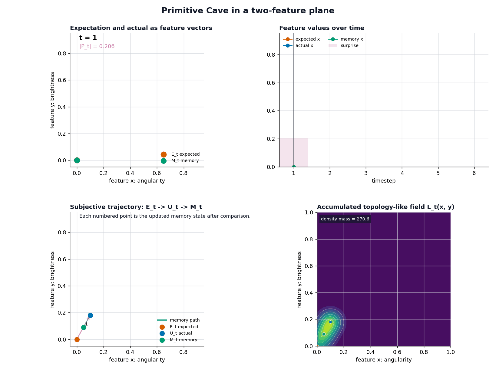
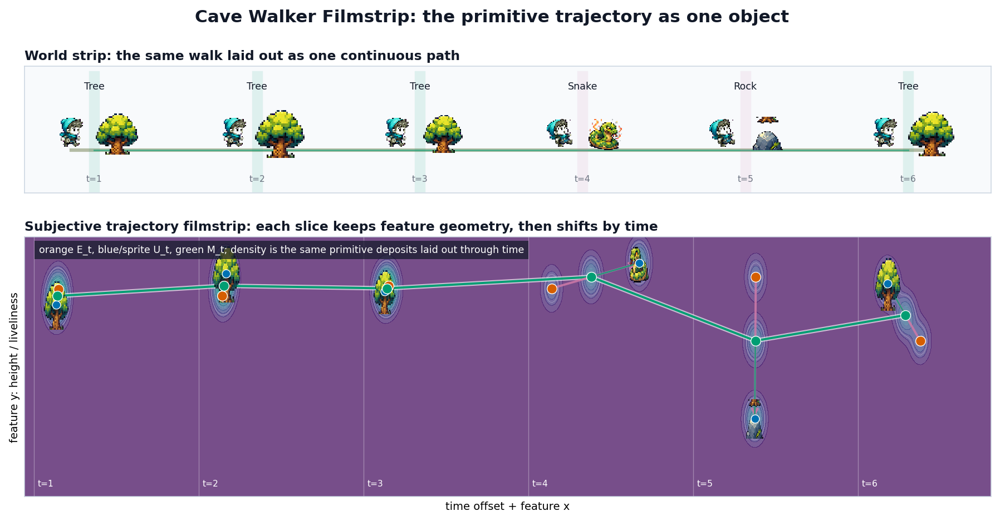
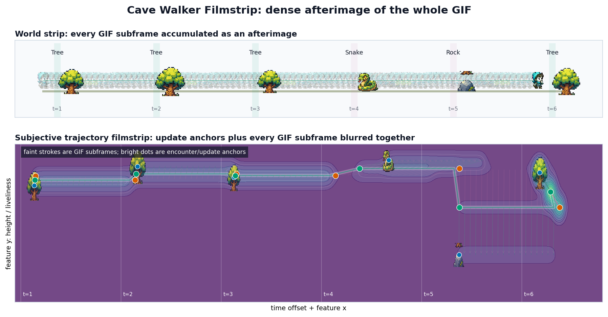

Primitive Demo Walkthrough
This folder is the smallest visible version of Cave.
The full Cave system has many layers: world objects, exposure, sensing, attention, expectation, error, memory, value, workspace compression, topology, views, and comparison. The primitive demo strips that down to the first loop that can still produce a subject-side trajectory.
admitted input -> expectation -> error -> update -> next expectationThat loop is the point of the demo.
The Primitive Loop
At each timestep, the primitive system carries one state forward as memory. That memory becomes the next expectation. The actual admitted input arrives. The mismatch becomes prediction error. Memory moves toward the actual input.
E_t = M_{t-1}
P_t = U_t - E_t
M_t = M_{t-1} + eta * P_tWhere:
| Symbol | Meaning |
|---|---|
U_t | actual admitted input |
E_t | expectation from prior memory |
P_t | prediction error |
M_t | updated memory |
eta | learning/update rate |
The minimal primitive state is:
S_t = (U_t, E_t, P_t, M_t)The primitive trajectory is the ordered history:
S_1 -> S_2 -> ... -> S_TThis is why the trajectory is not just memory. Memory is one projection of the trajectory. The full state history includes what was expected, what arrived, how wrong the expectation was, and how memory changed.
The Abstract Demo
The abstract demo shows the recurrence directly in a two-feature plane.

The top-left panel shows the current expectation, actual input, prediction error, and updated memory. The top-right panel keeps a running tape. The bottom left panel shows the subjective trajectory as points and arrows. The bottom right panel accumulates a topology-like field from the same sequence.
That accumulated field is not the trajectory itself. It is a deposit made from the trajectory:
trajectory = ordered state history
field = accumulated trace of that historyThis distinction matters because the full Cave system also has topology-like state, but topology is downstream of subject-side history. The primitive demo makes that dependency visible.
The Walker Demo
Cave Walker wraps the same recurrence in a tiny object world.
world object -> feature vector -> primitive update -> rendered subject stateThe current episode is:
tree -> tree -> tree -> snake -> rock -> treeThe subject starts with a tree-like prior. The early tree encounters are not identical: each tree has a small visual and feature variation, so the subject receives slightly different tree-like inputs rather than the same exact vector each time. The snake then creates a much larger prediction error.

The side-scroller is not a separate model. It is an intuition layer over the same primitive recurrence:
expected object-like state
actual encountered object
error from mismatch
memory update
changed expectation for the next encounterThe world path is:
tree -> tree -> tree -> snake -> rock -> treeThe subject-side trajectory is:
S_1 -> S_2 -> S_3 -> S_4 -> S_5 -> S_6Those are different things. The world sequence is what is available in the episode. The primitive trajectory is what happens inside the subject once those objects are admitted as inputs.
The Filmstrip View
The GIF shows the walk one encounter at a time. The filmstrip shows the same walk as a single static object: time runs left-to-right, and each slice keeps the two-feature geometry intact while shifting along the time axis.

The top strip is the world path; the bottom strip is the subjective trajectory unrolled. At each slice the orange E_t, blue U_t, and green M_t sit in their feature positions, the pink arrow is the error P_t, and the green line threads the memory path through the whole sequence. This is the trajectory made legible without animation — the same S_1 -> ... -> S_T history, flattened into one frame.
The blur variant accumulates every GIF subframe between the encounter anchors, so the continuous motion between updates becomes a dense afterimage:

The bright dots are the encounter/update anchors; the faint strokes are the in-between subframes. Both filmstrips are the same primitive deposits the accumulated field is built from — just laid out through time instead of summed into one plane.
Why This Sits Below Full Cave
Primitive Cave starts after input has already been admitted.
That is a deliberate simplification. It does not explain how exposure, sensing, attention, or value decide what gets admitted. It does not model a full subject profile, multiple view boundaries, or comparison across subjects.
The full Cave system sits around this kernel:
world object
-> exposure
-> sensing
-> attention
-> admitted input
-> expectation
-> error
-> update
-> changed future uptakeSo the relationship is:
Primitive Cave = minimal trajectory generator
Full Cave = complete subject-side architecturePrimitive Cave shows how a subject-side trajectory can form at all. Full Cave explains why different subjects form different trajectories from the same external episode.
Running The Demos
From the repository root:
python notebooks/demos/primitive_demo/primitive_cave/primitive_demo.py
python notebooks/demos/primitive_demo/cave_walker/cave_walker_demo.pyThe scripts write generated frames, rollout data, and GIFs into each demo's out/ directory. The two GIFs embedded in this walkthrough are checked-in copies of representative outputs so the explanation can be read without running the scripts first.
Files
kernel/primitive_engine.py
Shared recurrence kernel.
primitive_cave/primitive_demo.py
Abstract 1D and 2D visualizations of the primitive loop.
cave_walker/cave_walker_objects.py
Object definitions, episode, tree variants, and object-to-feature mapping.
cave_walker/cave_walker_demo.py
Side-scroller renderer plus HUD, trajectory map, and topology panel.
../assets/primitive_loop_2d.gif
Checked-in abstract recurrence walkthrough.
../assets/cave_walker.gif
Checked-in object-world walkthrough.